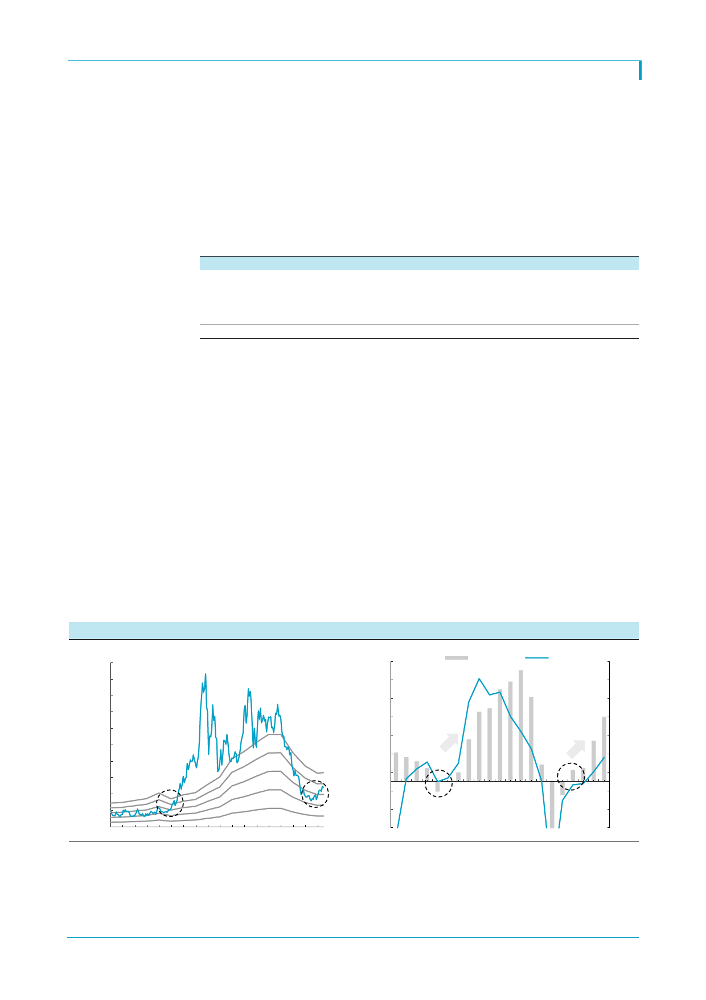

삼성중공업(010140)
2004년 review
2004년 11월, 삼성중공업은 덴마크, 스위스, 러시아, 그리스 선주로부터 22억달러의 수주
를 받으며 월단위로 사상 최대의 수주를 기록한다. 카타르가스와 AP Moller로부터 LNG
선, MSC로부터 9,200teu급 컨테이너선 4척, 미국 MODEC로부터 TLP 2기 등이 주요 수
주 내용이었다. 2004년 수주잔고는 처음으로 2.5년치를 돌파하며 도크를 채우기 시작했고,
당시로서는 초대형 규모의 컨테이너선과 LNG선을 대거 수주하며 고부가가치 선박 비중을
늘리기 시작했다.
<표 1> 2004년의 삼성중공업, 고부가가치 선박인 초대형 컨테이너와 LNG선 급증
중형 컨테이너선
초대형 컨테이너선
LNGC
기타
2000
37
2
2
23
Total
64
자료: 삼성중공업, Clarkson, 한국투자증권
2001
0
4
5
17
22
2002
10
2
0
37
47
2003
14
30
9
54
77
2004
4
12
20
34
58
2005
14
0
9
16
39
(단위: 척)
2006
20
17
10
45
75
그러나 2004~2005년 ROE는 2.2%, 3.8%로 여전히 낮았다. 2000년까지 대규모 적자에
시달리다가 흑자전환은 성공했으나 2002년까지 수주는 30억달러를 하회했고 저가 수주
후유증도 잔존했기 때문이다. 그럼에도 2004년 하반기 삼성중공업의 PBR은 기존 0.5배
에서 0.9배로 상승했다. 2004~2005년 양호한 수주로 2006년 ROE는 7.0%로 상승했고
2007년부터 2014년까지 ROE는 두 자릿수를 기록하기 시작했으며 2004~2005년 수주
선박의 인도가 시작된 2007~2010년 평균 ROE는 무려 25%였다.
우리는 2007년 중국발 big cycle 가능성은 배제하더라도 현 시점이 장기 불황에서 탈출하
던 2004년과 유사하다고 판단한다. 2004년 수주 상승기의 핵심은 LNG선과 초대형컨테이
너, 해양플랜트 등 고사양 수주라는데 있다. 올들어 삼성중공업은 FSRU와 LNG선,
FLNG등 독보적 강점이 있는 분야에서 성과를 나타내고 있다. 즉 2018년까지 매출 역성
장으로 5% 미만의 ROE는 불가피하지만 이후 빠른 ROE 상승을 겨냥한 선제적 투자가 필
요하다.
[그림 1] 삼성중공업 PBR 밴드
[그림 2] 삼성중공업 영업이익과 ROE
(원)
50,000
(십억원)
1,300
영업이익 (좌)
ROE (우)
(%)
35
45,000
1,100
30
40,000
35,000
30,000
25,000
20,000
15,000
1.0x
0.8x
10,000
0.6x
5,000
0.4x
0.2x
0
00 01 02 03 04 05 06 07 08 09 10 11 12 13 14 15 16 17
900
25
700
20
500
15
300
10
100
5
(100)
0
(300)
(5)
(500)
(10)
00 01 02 03 04 05 06 07 08 09 10 11 12 13 14 15 16 17 18 19 20
자료: 삼성중공업, 한국투자증권
자료: 삼성중공업, 한국투자증권
2